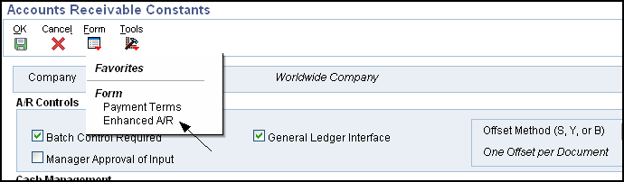
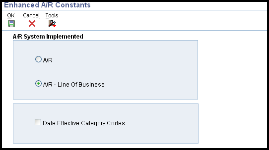

Overview and Setup of Accounts Receivable Constants and Enhanced A/R Constants for Line of Business and Date-Effective Category Code Processing (P0000, F0009, F0010)
Constants provide a basic framework for how the EnterpriseOne Accounts Receivable system works, based on the business needs. When you set up Accounts Receivable constants, you set up controls for the entire system, as well as establish information by company (such as aging information). For example, you can specify whether management approval is required for posting invoices and receipts, and how the system generates automatic entries when accounts receivable batches are posted.
When setting up Accounts Receivable constants, you can specify whether to process accounts receivable by line of business and whether to use date-effective category codes using the Enhanced Accounts Receivable Constants. The system stores Accounts Receivable constants in the F0009 and F0010 tables.
NOTE:Do not change system constants after you set up the system. If you do make changes, you must be thoroughly familiar with the information because constants are central to the system processes. You should also ensure that only authorized personnel can access and maintain the constants.
Scope
This document is an overview of Accounts Receivable Constants, including Enhanced Accounts Receivable Constants for Line of Business processing within Oracle JD Edwards EnterpriseOne Financial Management system.
Details
Setting Up Accounts Receivable Constants (P0000)
Setting System Constants
A/R Controls Section: These constants control the Accounts Receivable system for all companies. They are set up for company 00000 only, as the default company:
From System Setup (P0000), select ‘Accounts Receivable Constants’.
Click ‘Find’ and select ‘Company 00000’.
Set the following fields to the desired value:
Batch Control Required - If you want to specify the total number of documents to enter in a batch and the corresponding amount, you can select this option. By selecting this option, the system displays the Batch Control form (P0011) prior to entering a batch transaction, on which you enter information about the batch. This form enables you to compare what you actually entered against what you specified that you would enter, which helps you minimize entry errors.
Manager Approval of Input - If you select this option, the system assigns a pending status to all invoice and receipt batches, which require batch approval before you can post them.
General Ledger Interface - Select this option if you are using the JD Edwards EnterpriseOne General Accounting system. Failure to select this option results in one-sided entries that negate any integrity reporting.
Offset Method - When you post transactions to the general ledger, you can select whether to create one offsetting entry per batch 'B', one offsetting entry per transaction 'Y', or one offsetting entry per pay item 'S'.
NOTE: If on the General Accounting Constants (P0000) the Multicurrency Conversion field is set to either Y or Z and if the Detailed Intercompany Settlements field contains a value of either '2' or '3', then you must specify an Offset Method of either 'S' or 'Y' in the Accounts Receivable [and Accounts Payable] Constants. If not, the system returns an error when you post the batch. See Overview of Intercompany Settlement Methods (P0000) and Overview of General Accounting Constants (P0000) for more information.
Set the default Company Constant fields in the 'Cash Management' and 'Aging Information' sections to the desired value. See section below.
Click ‘OK’.
Setting Company Constants
When you set up Accounts Receivable constants, you can designate cash management options and default aging information by company. The constants enable you to specify whether to print statements and delinquency notices, process automatic receipts, and use different aging categories and dates for collection purposes.
These are set up on Company 00000 as default values, which are then copied to all other companies that have been set up in the JD Edwards EnterpriseOne General Accounting system. At this point, the companies contain the default values from Company 00000. Therefore, you only need to revise the information for the companies that you want to be different from company 00000.
Although you establish default settings for the cash management options on a company basis, you can override those settings at the customer level when you set up customer information. Many Accounts Receivable reports and batch processes enable you to specify aging information in the processing options that override the default values in the constants.
From System Setup (P0000), select ‘Accounts Receivable Constants’.
Click ‘Find’ and select your specific company, ‘Company 00001’ for example.
The AR Controls field values are defaulted from those set up for Company 00000 and will be grayed out for all other companies.
The following fields are defaulted from those set for Company 00000. If you wish to change these to a company specific value, make changes and click 'OK':
Delinquency Notice - Select this option to print delinquency notices for the company based on the notification instructions that are set up for the policy that you assign to the customer.
NOTE: This option exists in both the Customer Master Information program (P03013) and the Accounts Receivable Constants program (P0000). In the Accounts Receivable Constants program, the option controls whether notices are printed for invoices that are entered for a specific company. In the Customer Master Information program, the option controls whether notices are printed for a customer.
Auto Receipt - Select this option to process receipts in the EnterpriseOne Accounts Receivable system using the automatic receipt processing programs. The option must be activated for both the customer and the company in the Accounts Receivable constants for the system to process automatic receipts.
Print Statement - Select this option to print statements for the customer.
NOTE: This option exists in both the Customer Master Information program (P03013) and the Accounts Receivable Constants program (P0000). In the Accounts Receivable Constants program, the option controls whether statements are printed for invoices that are entered for a specific company. In the Customer Master Information program, the option controls whether statements are printed for invoices entered for the customer.
Age as of Date (DAG) - Enter the date that the system uses to determine the aging category to which invoices are assigned. The system compares the aging date to the invoice date, statement date, due date, or G/L date, which is defined by the value in the Date Type field (AGE) (also referred to as Aging - Date Based On), and then uses the value in the Aging Method field (AGEM) to determine which aging category to update. If you use method '1',Aging Days, the aging categories are defined in the Aging Days fields (CRDY, AGR1, AGR2, AGR3, AGR4, AGR5, AGR6, and AGR7) in the Accounts Receivable constants. If you leave this field blank, the system uses the current date.
NOTE: The JD Edwards EnterpriseOne Sales Order Management system also uses this date for credit checks. Leave this field blank to ensure that the credit checks are always current.
Aging Method (AGEM) - Enter the code that designates which aging categories that the system uses to assign invoices. The system uses the date that is specified in the Age as of Date field (DAG) and the value that is specified in the Date Type field (AGE) to calculate the aging for each invoice, and then assigns them to the aging category specified by this code. Values are:
1: Aging days. The system assigns invoices to the aging categories specified in the Aging Days fields. The aging categories are user–defined.
2: Fiscal periods. The system uses the fiscal periods defined by the date pattern assigned to the company record as the aging categories.
3: Calendar. The system uses each calendar month as an aging category.
Date Type (AGE) - Enter the code that specifies which date on the invoice record to use to calculate aging. The system compares the date on the invoice record to the date in the Age as of Date field (DAG) to determine the aging, and then updates the aging category based on the method specified in the Aging Method field (AGEM). Values are:
I: Invoice date
D: Due date
G: G/L date
S: Statement date
Aging Days - Beginning and thru (CRDY, AGR1 - AGR7) - Enter a number to define the number of days in the aging categories. The system uses the value that you enter in the Beginning field (CRDY) in conjunction with the value of AGR1. The system uses values in the thru fields in conjunction with CRDY and AGR2 to define the current and first aging categories.
Setting Up Enhanced Accounts Receivable Constants (P0000)
You use the Enhanced Accounts Receivable Constants to specify whether to use line of business processing and date-effective category codes.
Line of Business Processing
Line of Business processing was designed to allow users to distinguish various Accounts Receivable needs of a customer for different departments, locations, products and divisions. When implemented, the user is able to process Accounts Receivable information such as credit limits, payment terms and default tax information for each customer by company. When using Line of Business processing, multiple Customer Master By Line Of Business (F03012) records are needed for a customer in order to assign different terms for different products and business obligations.
Example
Corporation XYZ (Customer Number 123) has branches in Delaware (Company 00001), California (Company 00002) and Florida (Company 00003) and each branch has unique Accounts Receivable processing needs. Corporation XYZ has established the need to utilize the Line of Business processing feature, therefore three separate Customer Master Records must be established in the F03012 for each of the branches. These records will be keyed to the same Address Book number (123), but with different company numbers. Corporation XYZ (Customer Number 123) is established once within the Address Book Master (F0101). With Line of Business enabled, Delaware is defined as Company 00001 in the F03012, California as Company 00002 in the F03012 and Florida as Company 00003. The branches’ unique identification is defined in the Customer Master (F03012).
Activating Line Of Business
The Line of Business feature is an Accounts Receivable Constant. The first step to enable this feature is to activate the Constant.

From System SetUp (P0000), select ‘Accounts Receivable Constants’.
Click ‘Find’ to display available companies and select Company 00000.
Take the ‘Enhanced A/R’ form exit. The following options appear:
WorldSoftware A/R - This is the only option for Enterprise World users. The option is not available in 8.9 and later releases.
A/R - One customer record is used for all EnterpriseOne companies. Prior to 8.9, the option is "OneWorld A/R."
A/R – Line of Business - This option allows the use of multiple companies for one EnterpriseOne customer. Prior to 8.9, the option is "OneWorld A/R - Line of Business,".
Select 'A/R- Line of Business' and click ‘OK'.

NOTE:The Accounts Receivable Constants stored in General Constants (F0009) are cached information stored in both Database Caching and Service Cache. If you change settings for any of the constants, you must perform following steps in order for the changes to take effect:
On fat client, signing off and signing back in will help to reset the cache.
On web client, it will be required to explicitly reset the cache apart from signing off and signing back in.
In some instances, clearing the cache as mentioned above has not helped since F0009 is a bootstrap table and is cached with each call object kernel on the Enterprise Server. In such cases, its advisable that the JDE services must be bounced for the Enterprise Server.
Further steps related to Line of Business Processing are documented in the Customer Master section of the Accounts Receivable Implementation guide for your release, available on the Oracle Technology Network.
NOTE: It is not recommended to turn the Line of Business flag on or off once you have started to use the system and Oracle Support is unable to support any issues arising from the changing of this value with existing live data. The Line of Business information is stored in the Customer Master Table (F03012), which is shared across multiple applications such as CSMS, Contract Billing, Service Billing and Sales Order Processing. Each of these applications refers to the Accounts Receivable Constants to determine which F03012 record (company 00000 or company specific) to use in creation of the F03B11, F03B112, F03B13, and F03B14 records. When choosing to utilize either OneWorld A/R or OneWorld A/R - Line of Business, it is recommended to make a decision regarding which feature is best suited for business needs and remain with that solution. This is because Line of Business processing is data sensitive and effects all records added by company with different default criteria, credit collection techniques, and reporting needs. Due to the complexities of this feature, some ramifications of its use may be unforeseeable.
Date Effective Category Codes
If you are using the Advanced Pricing system, you might want to select the Date Effective Category Code option on the Enhanced A/R Constants form. You use customer category codes in the Advanced Pricing system to specify the customer group and pricing to use for the customer base. By selecting this option, you can set up multiple sets of category codes for a single customer by effective date. This option enables the Advanced Pricing system to adjust the pricing based on the effective date for each customer group.
When you select the Date Effective Category Code option, the system displays Form menu options from the Customer Master (P03013) application that enable you to set up category codes with effective dates. If you do not select this option, the system hides these menus.
When you use date-effective category codes, you cannot enter category code values in the customer master record (F03012). Instead, you enter them in a date-effective category code record (F03012A) and run Update Effective Date Category Codes (R03012A) to update the customer record. See Date Sensitive Customer Master Category Codes Activating Date Effective Category Codes. The Date Effective Category Code is an Accounts Receivable Constant. The first step to enable this feature is to activate the Constant.
From System Setup (P0000), select ‘Accounts Receivable Constants’.
Click ‘Find’ to display available companies and select Company 00000.
Take the ‘Enhanced A/R’ form exit.
Select ‘Date Effective Category Codes’ and click ‘OK’.
NOTE: The Accounts Receivable Constants, stored in General Constants (F0009) is a cached table. See note above for clearing the cache for changes to take effect.